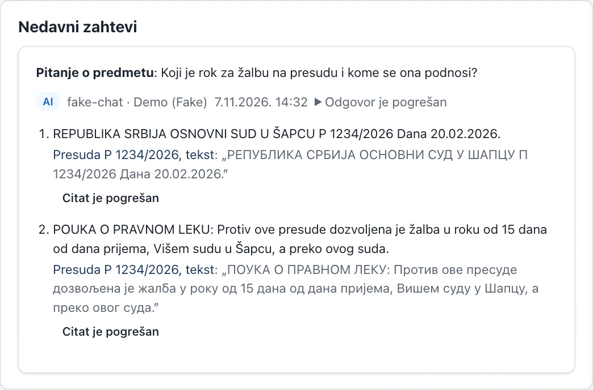
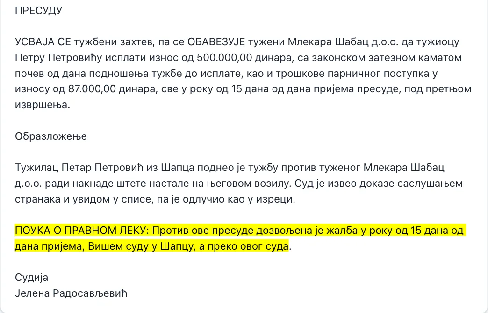

Član 1.
Svaka tvrdnja ima citat sa strane dokumenta
Pitajte o predmetu svojim rečima. Odgovor se sastoji od tvrdnji, a uz svaku stoji citat iz dokumenta i link na njegovu stranu.
- Citat se proverava mašinski u izvornom tekstu. Dozvoljene su samo sitne razlike: ćirilica ili latinica, dijakritika, velika i mala slova, prelomi reda.
- Brojevi moraju da se poklope u celosti, a „osnovan“ ne prolazi kao potvrda za „neosnovan“.
- Tvrdnja bez potvrđenog citata se briše. Ako otpadne više od polovine, odgovor se priprema ponovo; ako ni tada nema dovoljno, Glava kaže da nema dovoljno izvora umesto da nagađa.
- Klik na citat otvara stranu dokumenta sa obeleženim mestom.


Snimci iz demo instalacije sa izmišljenim podacima i test-modelom: zato je tekst tvrdnji ovde doslovan citat. Provera citata, linkovi na strane i oznake isti su kao sa pravim modelom.